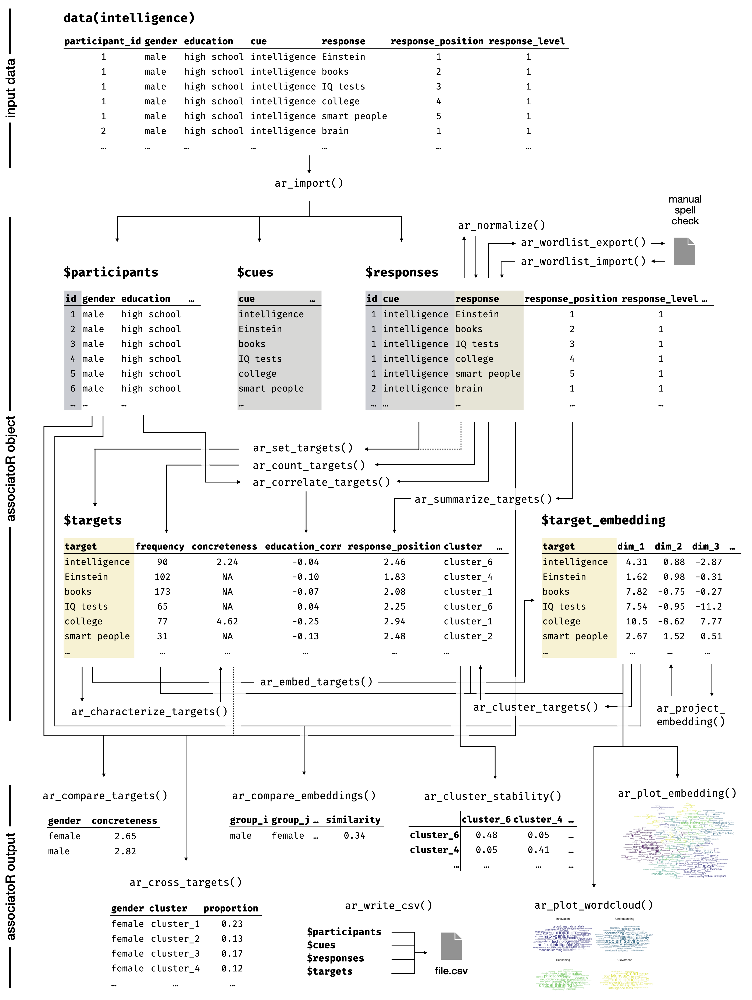

Associations offer a window into the mind, revealing how words, concepts, and topics are represented. They can be used to map how people think about key social and technological issues.
associatoR is an R package for analyzing free association data. It covers the entire analysis pipeline, from importing and processing to embedding, clustering, and visualizing the data.
Installation
The latest development version on GitHub can be installed via devtools::install_github("samuelae/associatoR"). This may require prior installation of the devtools package via install.packages("devtools").
Team and Citation
The associatoR package is developed by Samuel Aeschbach and Dirk U. Wulff, with contributions from Rui Mata.
Please cite the package as:
Aeschbach, S., Mata, R., & Wulff, D. U. (2024, March 22). Mapping the Mind With Free Associations: A Tutorial Using the R Package associatoR. https://doi.org/10.31234/osf.io/ra87s
Overview
The figure below provides an overview of core functions and workflows of the associatoR package based on the example presented in Aeschbach, Mata, and Wulff (2024).
